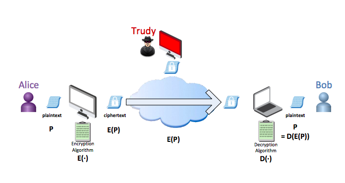
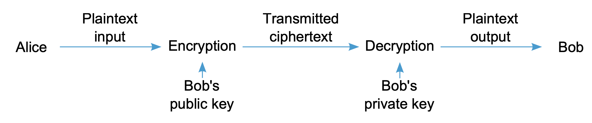
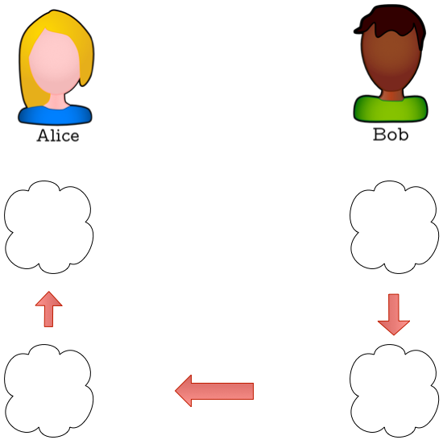
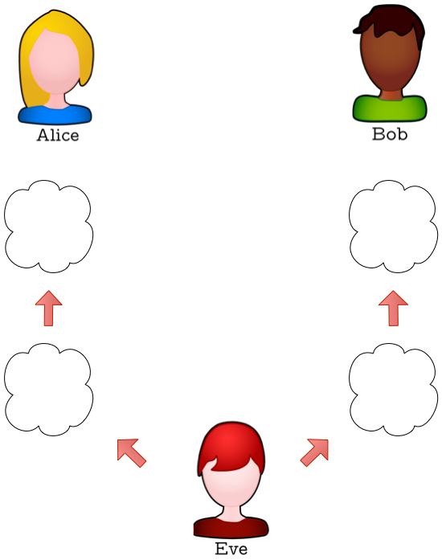
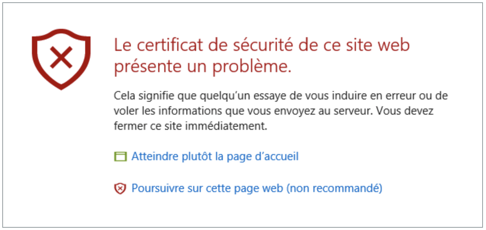
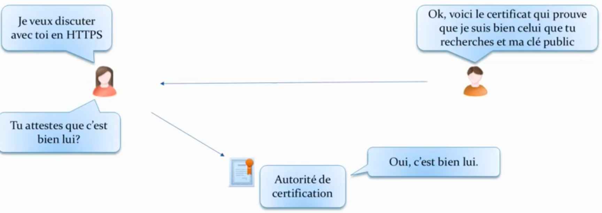
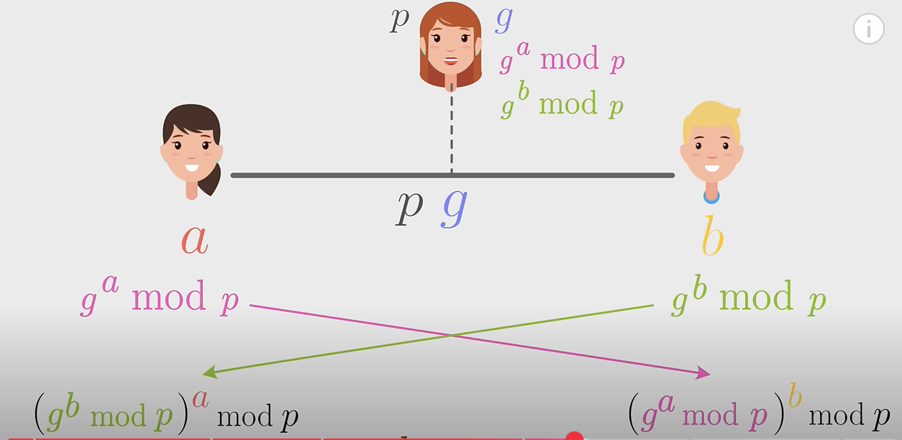
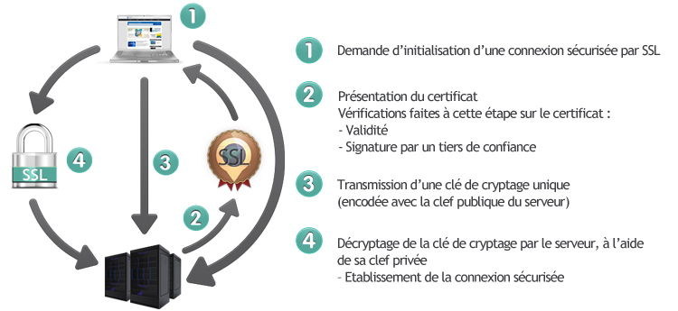
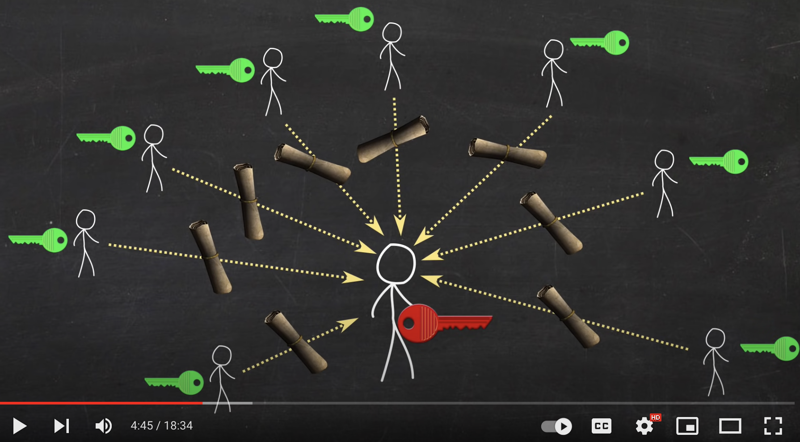

chiffrement asymetrique
Ce chapitre contient plusieurs pages:
- sécuriser les communications: Lien 1
- chiffrement asymetrique: Lien 2
- TP sur les nombres premiers: Lien 3
- Projet sur le hack ethique et le chiffrement RSA: Lien 4
Chiffrements asymétriques
Pour le chiffrement symétrique, le seul secret, c’est la clé de chiffrement. Cette clé doit avoir, pour des raisons pratiques, une longueur raisonnable (64, 128, 256 bits). Ce chiffrement permet de communiquer de manière confidentielle, ou de préserver la confidentialité de nos données sur un disque dur.
L’un des inconvénients du chiffrement symétrique est le nombre de clés important qu’il faut par couple d’utilisateur, à l’echelle d’internet. De plus, comment assurer l’echange de clés entre participants de manière sûre?
L’autre problème avec le seul chiffrement symétrique, c’est qu’il ne permet pas de repondre aux besoins d’authentification (reconnaitre l’identité) et d’authenticité (le message n’a pas été modifié).
Pour comprendre ces termes, on utilise le scenario suivant. Alice et Bob sont 2 personnes qui veulent echanger des messages de manière sécurisée. Une 3e personne, appelée Trudy joue le rôle d’un attaquant.

Le trio Alice - Bob - Trudy
Le chiffrement asymétrique utilise plusieurs clés, une pour le chiffrement, et une autre pour le dechiffrement. Il repose sur des propriétés mathématiques de l’arithmetique modulaire. (voir principe du chiffrement RSA: wikipedia)
Principe du chiffrement RSA
Confidentialité
Il doit y avoir 2 clés. L’une de ces clés doit rester secrête, et conservée par l’expediteur du message: c’est la clé privée. L’autre clé utile pour le chiffrement et le dechiffrement est partagée: elle est dite publique. On peut indifféremment chiffrer avec la clé publique et déchiffrer avec celle privée, ou l’inverse.
VIDEO chiffrement asymetrique (demarrer à 4min28) - chaine ScienceEtonnante
Ainsi, comme la clé de Bob est publique, Alice peut utiliser cette clé pour chiffrer le message qu’elle veut lui envoyer, un peu comme si elle mettait le message dans un coffre (celui de Bob). Et Bob, qui possède la clé privée correspondante (la clé de son coffre) peut alors déchiffrer le message d’Alice.

Chiffrement asymetrique
Confidentialité:
Alice : C = chiffrement(m,Bob_public_key) => Bob
Puis, pour Bob:
m = dechiffrement(C,Bob_private_key)
Authentification
On peut utiliser cet algorithme pour authentifier l’auteur du message, et réaliser une signature numérique.
Imaginons que Bob utilise sa clé privée pour chiffrer un message M. Il l’envoie à Alice, qui, en utilisant la clé publique de Bob, pourra le déchiffrer. Elle pourra ainsi s’assurer que Bob en est bien à l’origine et que son contenu n’a pas été modifié.
En effet, comme il est le seul à posséder la clé privée, ce message M vient bien de Bob.
Compléter la situation où Bob envoie un message de type Bonjour à Alice, en utilisant sa clé privée:

Bonjour Alice - via chiffrement asymetrique
Cet échange n’est réellement sécurisé qu’à la condition que la clé publique de Bob, vienne bien de Bob. Et que personne ne se soit introduit dans la discussion pour substituer la clé publique de Bob par la sienne (attaque de l’homme du milieu).
Compléter la situation suivante où Eve réalise une attaque dite de l’homme du milieu. Elle envoie au préalable sa propre clé publique à Alice et Bob. Puis elle se fait passer pour chacun des 2 lors de la discussion.

Bonjour Alice, bonjour Bob - Eve
Authentification:
Bob : D = chiffrement(signature,Bob_private_key) => Alice
Puis pour Alice:
signature = dechiffrement(D,Bob_public_key)
Organismes de certification
Pour s’authentifier, Bob doit d’abord envoyer à Alice un certificat, qui contient sa clé publique mais aussi d’autres informations qui permettent de verifier la validité de ce certificat, en particulier l’emetteur: le nom de l’autorité de certification, une infrastructure à clé publique (PKI) qui a validé l’identité de Bob.
Certificats: Les navigateurs permettent d’ouvrir les pages des sites qui ont pu être authentifiés. Pour faire ceci, les navigateurs intègrent un certain nombre de certificats reconnus. Pour les autres, ils utilisent une chaine de certification: les navigateurs font confiance à certaines autorités de certification, qui ont au préalable, certifié leurs clients (possesseurs de sites web).
Si la chaine de confiance est rompue, votre navigateur affiche cette image qui va certainement vous dissuader de poursuivre votre navigation:

certificat non reconnu

procedure d'echange de certificat
Complément sur RSA (Grand Oral)

VIDEO - sciences etonnantes. L'Algorithme qui Sécurise Internet (entre autres...)
Alice veut envoyer un message à Bob
- Elle doit d’abord lui envoyer sa clé publique:
Lors de la confection de la clé publique e, le propietaire de la clé utilise la valeur de 2 entiers p et q premiers entre eux (secrets). En principe, p et q sont très grands (plus de 100 chiffres). Supposons pour l’exemple p=3 et q=11.
Le proprietaire calcule le module de chiffrement n=p*q. Ici, n=33. Ce calcul est très facile pour lui, alors qu’il est très difficile de trouver p et q en connaissant n. C’est sur cette difficulté que repose la robustesse de RSA.
Il calcule ensuite l’indicatrice d’Euler: f=(p-1)*(q-1) et détermine l’exposant public e qui doit être premier avec f.
Par exemple, ici, f=20. On peut choisir e=3,7,9,13,…
La couple (e,n) sera alors la clé publique d’Alice. Choisissons (3,33).
- Bob reçoit la clé. Il l’utilise pour chiffre son message. Supposons que le message est le caractère
F, le 6e caractère de l’alphabet.m=6. Alors le chiffrement se fait à l’aide de la relation: $m^e [n]$
En suivant l’exemple,
$$E(m) = 6^3 [33] = 18$$Bob va alors transmettre 18, qui est le message chiffré.
- Alice va alors déchiffrer le message avec sa clé privée.
Elle possède pour cela une clé constituée d’un exposant privé d qui est calculée comme inverse modulaire de e (modulo $(p-1).(q-1)$):
Pour dechiffrer le message M, elle fait: $M^d (mod n)$ où n=p.q
On exploite la propiété qui veut que $(M^e)^d = M (mod~n)$
Exemple: d=7 car $7 \times 3=21 = 20 + 1$, 7 est inverse modulaire de 3 modulo 20.
On a alors: $M^d [33] = 6$, Alice retrouve le message clair envoyé par Bob.
Avec les algorithmes classiques, casser la factorisation croit exponentiellement avec la longueur de la clé.
Principe d’une communication securisée HTTPS
Lors d’une communication HTTPS: les objectifs d’authentification, authenticité et de confidentialité sont remplis. Lors du protocole de communication, les chiffrements asymétriques et symétriques sont tous 2 utilisés:
Que Se Passe-t-il Entre un Navigateur Web (client) et un Serveur ?
- le client demande au serveur que celui-ci s’authentifie (1)
- Le serveur envoie au navigateur une copie de son certificat SSL (2)
- Le navigateur vérifie s’il fait confiance à ce certificat SSL. Si oui,le client envoie de manière sécurisée une clé de session qui servira pour la communication (3). L’envoie de la clé se fait à l’aide du chiffrement asymétrique (RSA). Le client utilise la clé publique du serveur pour cet envoi.
- Cette clé sera utilisée pour des chiffrements symétriques entre le client et le serveur (4).

établissement d'une communication securisée - OVH
Signature numérique: Lorsqu’on utilise sa propre clé privée pour envoyer un message, et qu’une autorité de certification peut garantir l’origine de cette clé privée, alors ce message envoyé a valeur de signature numérique. Il permet d’authentifier l’emetteur du message.
Fonction de hachage: intégrité
Une fonction de hachage est un algorithme qui prend en entrée une chaine de caractères de longueur quelconque, et qui retourne en sortie une chaine de caractères de longueur n fixée, appelée empreinte. Il est presque impossible de retrouver la chaine de caractères d’origine à partir de cette empreinte, tant la diffusion est importante suite à la modification d’une partie même infime du texte à chiffrer par cette méthode.
Une application classique de l’utilisation de la fonction de hachage est le stockage de mots de passe, ou bien la verification de l’intégrité d’un message envoyé (comme un checksum). Mais aussi pour la constitution d’une blockchain:
Voir: L’utilité du hachage pour la chaîne de blocs: rapport du Sénat
Dans la blockchain, chaque bloc contient le hash du bloc précédent, les données des nouvelles transactions, et le nouveau hash constitué à partir de ces données (hash du bloc precedent + transactions).
Blockchain
Une blockchain est un registre, une grande base de données qui a la particularité d’être partagée simultanément avec tous ses utilisateurs (constituant les noeuds d’un réseau distribué), tous également détenteurs de ce registre, et qui ont également tous la capacité d’y inscrire des données, selon des règles spécifiques fixées par un protocole informatique très bien sécurisé grâce à la cryptographie. Il est impossible d’effacer ou modifier ce qui a déjà été écrit dans ce registre. En pratique, une chaîne de blocs (blockchain) est une base de données qui contient l’historique de tous les échanges effectués entre ses utilisateurs depuis sa création. economie.gouv
La sécurité vient du consensus (PoW, Proof of Work) des validateurs lorsque de nouveaux ajouts sont proposés. La validation consiste en un calcul long et difficile sur les données de l’historique de la blockchain. Une fois qu’il y a consensus (un commun accord), un nouveau bloc est ajouté, et la base de données (la blockchain) est alors proposée à tous les noeuds du reseau. (mise à jour).
Cette tâche “ingrate” realisée par les validateurs est remunérée. Le bloc contient ainsi l’adresse de cryptomonnaies, qui sont partagées entre validateurs: Un registre distribué doit être accompagné d’une cryptomonnaie (propriétaire ou utilisée à partir d’un autre registre) afin de fournir des incitations pour maintenir opérationnels les programmes de validation et de synchronisation.
Pour résumer, une blockchain est un registre regroupant les transactions et adresses possédants des Bitcoins (ou autre cryptomonnaie), sécurisé par un protocole de validation par calcul et consensus.
La technologie “blockchain” s’est développée pour soutenir des transactions réalisées via les cryptomonnaies/crypto-actifs. Mais d’autres domaines et secteurs d’activités, marchands ou non marchands, publics ou privés, utilisent déjà la chaîne de blocs (blockchain) ou prévoient de le faire dans les années à venir: Dans le secteur de l’assurance par exemple, l’apport de la blockchain tient par exemple à l’automatisation des procédures de remboursement.
Il est possible de lire dans la blockchain. On utilise pour cela un explorateur de blocs.

video sciences etonnantes - blockchain
Il existe un autre type de validation, le PoS (Proof of Stake, ou preuve d’enjeu), qui permet d’augmenter grandement le flux de transactions. La blockchain Ethereum par exemple a effectué sa transition de la preuve de travail (PoW) vers une preuve d’enjeu (PoS) en septembre 2022. Pour participer à la sécurisation du réseau d’une blockchain PoS, il suffit d’avoir accumulé une quantité suffisante de jetons de la cryptomonnaie échangée sur le réseau. Plus une personne possédera de jetons d’une cryptomonnaie, plus on considérera que la sécurité du réseau est un enjeu important pour elle. Il y aura alors plus de chances d’être sélectionné (il y a une part d’aleatoire) pour produire un nouveau bloc et obtenir une récompense, en jetons.
Exercices
Nombre de clés:
Un groupe de n personnes souhaitent communiquer entre elles, chacune, deux à deux. Elles souhaitent utiliser un moyen de communication sécurisé par un chiffrement symétrique. Combien de clés différentes seront nécessaires?
Méthode de chiffrement de Vigenère.
Si on appliquait cette méthode à un alphabet de 95 caractères (les caractères ascii):
- Combien de clés différentes peuvent exister avec 4 caractères?
- Combien de temps cela prendrait-il au maximum pour déchiffrer un message par recherche exhaustive (force brute), si le temps de calcul pour le déchiffrement est de 1 milliseconde par clé?
Mots de passe
-
Combien de mots de passe différents de 10 caractères peuvent être générés à l’aide des 95 caractères ascii?
-
Avec un ordinateur capable de tester 1 million de mots de passe par seconde, combien de temps cela lui prendra t-il pour explorer l’ensemble des combinaisons?
-
Expliquer ce qu’est une attaque par recherche exhaustive.
-
Pour les proriétaires d’un site internet, vaut-il mieux conserver dans la base de données, les mots de passe des clients, ou bien le hachage de chacun de ces mots de passe?
RSA
- Quel est la valeur de $8^7$ modulo 40?
- Verifier que 55 est decomposable en produit de 2 nombres premiers p et q. Calculer
(p-1)*(q-1) - Soit la clé publique $e=3$. Quel est l’inverse de $e$ modulo 40? Appeler ce nombre $d$.
- Chiffrer le message M = 5 avec la clé publique
e, selon $M^e(mod~ 55)$ - Dechiffrer $M^e(mod~ 55)$ avec la clé privée
d, selon la même fonction que précédemment. - Dans un protocole de chiffement asymétrique, les algorithmes de chiffrement et de déchiffrement sont-ils les mêmes?
- Dans un protocole de chiffrement asymétrique, toutes les personnes possédant la clé publique de Bob peuvent lui envoyer un message?
- Dans un protocole d’authentification, toutes les personnes possédant la clé publique de Bob peuvent vérifier sa signature émise?
- Supposons que Bob envoie à Alice un message chiffré de la manière suivante:
C = chiffrement(m,Bob_public_key). Est-ce qu’Alice peut authentifier Bob avec ce message? - Supposons que Bob envoie à Alice un message chiffré de la manière suivante:
C = chiffrement(m,Bob_private_key). Est-ce que ce message est confidentiel?
Liens
- autres exercices: mathly.fr
- chiffrement RSA: wikipedia
- Chiffrement : notre antisèche pour l’expliquer à vos parents article de NextImpact
- Les certificats article de NextImpact
- autorité de certification video Youtube - chaine de Yann Bidon
- sécurisez vos données avec la cryptographie openclassroom
- Principe des blockchains: rapport du sénat
- cours NSI sur RSA avec exercices: ldm_terminale.